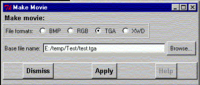

**************************************************************************
Make animation widget
Leif Laaksonen CSC 1996
**************************************************************************
The automatic creation of mpeg files works only on the Windows platform. On Unix you have to find your own program to create MPEG files from your separate frames.
Prepare animations by first producing discrete files and then make a mpg file from the files. Currently gOpenMol only supports Targa (tga) files but it is still possible to make the discrete screen dumps in other formats. Only small picture sizes can be used up to about 300 * 300 pixels.

Line command: see there is no line command for making animations
**************************************************************************
LUL/1996
**************************************************************************